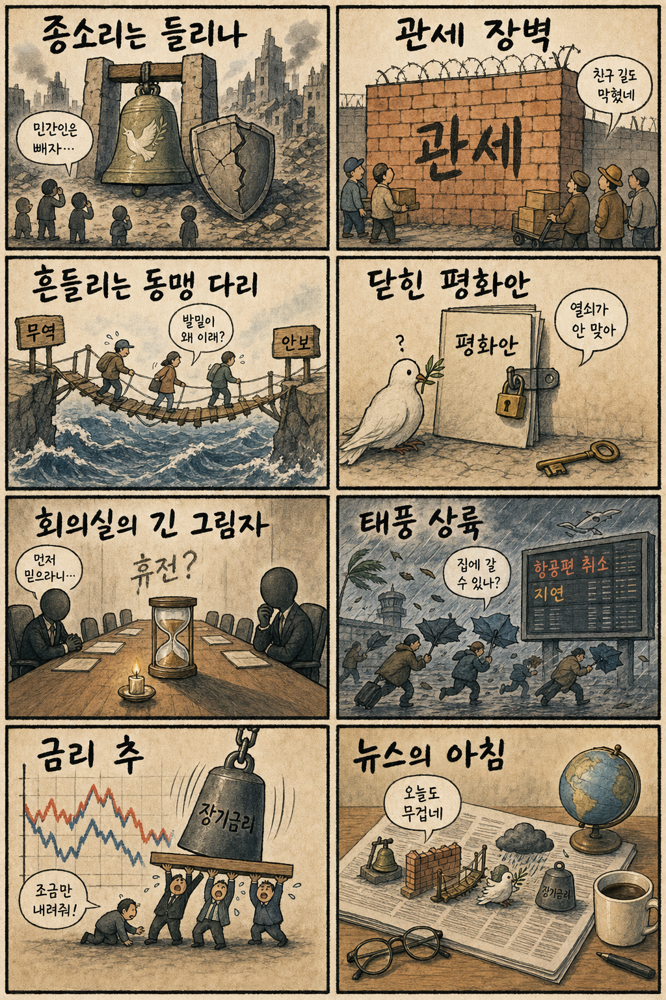
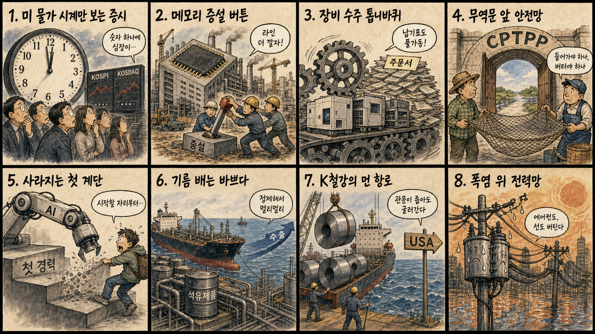

01
팔란티어 +10.32% — 기업용 AI 기대와 성장주 위험선호 회복이 겹치며 두 자릿수 상승했습니다
내용요약 172.01달러로 마감했습니다. 기업용 AI 기대와 성장주 위험선호 회복이 겹치며 두 자릿수 상승했습니다.
예상여파 AI 소프트웨어 관심을 높이지만 급등 뒤 추격 위험도 커졌습니다.
MORNING_BRIEFING_20260810
작성 시각: 2026-08-10 06:38 KST · 직전 미국 정규장과 2026-08-10 KST 당일 공개 기사 기준
직전 미국 정규장인 8월 7일에는 다우 +0.28%, S&P 500 +0.62%, 나스닥 +1.30%로 동반 상승했고 S&P 500은 사상 최고치로 마감했습니다. 고용 둔화가 금리 인하 기대를 높여 기술주 위험선호를 되살렸습니다. 다만 오늘 한국 증시는 주말 누적 뉴스와 미국 장기금리, 이번 주 물가지표 대기 심리를 동시에 반영할 전망입니다.
| 지수 | 종가 | 등락률 | 한국 증시 영향 |
|---|---|---|---|
| 다우존스 | 54,036.93 | +0.28% | 경기민감 심리의 제한적 회복 |
| S&P 500 | 7,757.64 | +0.62% | 위험선호 개선 |
| 나스닥 종합 | 26,690.62 | +1.30% | 반도체·성장주에 우호적 |
미국 기술주 위험선호가 회복됐습니다.
이번 주 금리 방향의 핵심 변수입니다.
국내 대형주는 추세 확인이 먼저입니다.
검증 문턱을 모두 통과한 후보가 없습니다.
8월 9일 보고서는 일요일 휴장과 검증 문턱 미충족으로 공식 추천을 내지 않았습니다. 실제 시가를 기준으로 계산할 종목이 없으며 게시 당시 판단은 그대로 유지됩니다.
| 지수 | 종가 | 등락률 | 기준일 |
|---|---|---|---|
| 다우존스 | 54,036.93 | +0.28% | 미국 08/07 |
| S&P 500 | 7,757.64 | +0.62% | 미국 08/07 |
| 나스닥 종합 | 26,690.62 | +1.30% | 미국 08/07 |
| KOSPI | 6,258.77 | -0.60% | 한국 08/07 |
| KOSDAQ | 798.81 | -0.36% | 한국 08/07 |
미국 기술주 반등 연계 반도체·AI 인프라, 차세대 메모리, 데이터센터 전력·냉각, 드론 방어
유가 민감 항공·화학, 내수소비, 급등 후 과열 반도체, 금리 방향에 민감한 고밸류 소프트웨어
내용요약 172.01달러로 마감했습니다. 기업용 AI 기대와 성장주 위험선호 회복이 겹치며 두 자릿수 상승했습니다.
예상여파 AI 소프트웨어 관심을 높이지만 급등 뒤 추격 위험도 커졌습니다.
내용요약 31.13달러로 마감했습니다. AI 서버 관련주로 매수세가 유입되며 강하게 반등했습니다.
예상여파 국내 서버·냉각 연결주에 우호적이나 변동성이 큰 종목군입니다.
내용요약 214.42달러로 마감했습니다. 클라우드 보안 수요 기대와 기술주 강세 속 상승했습니다.
예상여파 AI 시대 보안 지출의 방어력을 보여주지만 밸류에이션 점검이 필요합니다.
내용요약 328.58달러로 마감했습니다. 성장주 선호 회복에 힘입어 상승 마감했습니다.
예상여파 고변동 기술주 심리를 지지하지만 개별 수요와 마진은 별도 변수입니다.
내용요약 354.30달러로 마감했습니다. 기술주 강세장에서도 상대 약세를 보였습니다.
예상여파 대형 AI 플랫폼 내부에서도 실적·규제·투자비에 따른 차별화가 이어지고 있습니다.
미국 기술주 강세는 반도체·AI 인프라 심리에 우호적입니다. 반면 미국 장기금리 상승과 물가지표 대기, 최근 국내 대형 반도체의 급격한 등락은 장 초반 추격매수 위험을 높입니다. 원·달러 환율, 외국인 현·선물 수급, 삼성전자·SK하이닉스의 첫 30분 가격 안정 여부를 우선 확인하고 지수 반등이 거래대금과 함께 이어지는지 보수적으로 판단해야 합니다.
오늘은 추천 없음 — 현금 관망
전일까지의 외국인·기관 수급, 컨센서스 변화, 30건 이상 유사 조건 확률 보정, 예상 손익비 1.5 이상을 동시에 검증해 종합점수 75점·상승확률 60% 문턱을 넘긴 후보가 없습니다. 임의 점수와 확률은 만들지 않습니다.
관심 연결종목 메모리 증설 관련 대형 반도체·장비, 전력망, 정유·철강 수출주는 관찰 대상일 뿐 매수 추천이 아닙니다. 시초가 갭 상승 시 추격매수 금지입니다.
금리 인하 기대의 지속 여부를 봅니다.
성장주 할인율 부담을 점검합니다.
현·선물 동반 매수 여부가 중요합니다.
첫 30분 가격 안정과 거래대금을 봅니다.
핵심 요약: AI 메모리 수요는 2027년 물량 선점과 국내 증설로 이어지고 있지만 고객사의 HBM 사양 조정과 보안 비용이라는 변수가 함께 부상했습니다. 투자 확대를 실제 발주와 수익성으로 구분해 볼 시점입니다.
내용요약 삼성이 반도체 사업에서 거둔 이익을 바탕으로 110조원 규모의 후속 투자 방향을 검토한다는 보도입니다.
예상여파 첨단 공정·패키징·AI 인프라로 투자가 이어지면 국내 장비·소재 생태계에 중장기 수주 기회가 생길 수 있습니다.
내용요약 메모리 공급 제약 속 엔비디아와 AMD가 HBM 사양과 조달 전략을 조정하고 있다는 보도입니다.
예상여파 AI칩 공급 확대에는 도움이 될 수 있지만 메모리 업체의 제품 믹스와 가격 협상력에는 변수가 될 수 있습니다.
내용요약 글로벌 메모리 3사의 2027년 HBM·DRAM 물량이 선제적으로 예약되고 있다는 보도입니다.
예상여파 장기 공급계약은 업황 가시성을 높이지만 증설 속도와 고객 집중, 고평가 부담을 함께 점검해야 합니다.
내용요약 평택과 청주 메모리 생산능력 확대가 국내 반도체 부품·장비 발주로 연결될 것이라는 보도입니다.
예상여파 실제 발주 시점이 구체화되면 장비·소재 업체 수주에 긍정적이지만 고객사 투자 일정 지연 위험은 남습니다.
내용요약 AI 확산 과정에서 드러난 해킹과 보안 취약점을 세 가지 쟁점으로 정리한 분석입니다.
예상여파 기업의 AI 도입이 늘수록 모델 보안·권한관리·사람의 검증을 위한 지출이 필수 비용으로 자리 잡을 수 있습니다.
핵심 요약: 러시아·우크라이나와 가자지구의 인도주의 위기가 이어지고, 미국 관세와 장기금리가 동맹·금융시장에 동시에 부담을 주고 있습니다. 중국 태풍은 단기 아시아 물류 변수입니다.
내용요약 교황 레오 14세가 러시아와 우크라이나 양측에 민간인을 겨냥한 공격을 즉시 중단하라고 촉구했습니다.
예상여파 인도주의 압박은 커지겠지만 단기간 휴전으로 이어질지는 불투명해 곡물·에너지 운송 위험이 지속될 수 있습니다.
내용요약 미국의 관세 압박에도 한국과 일본에서 미국의 리더십을 더 높게 평가했다는 조사 보도입니다.
예상여파 동맹 신뢰가 유지되더라도 관세 비용이 누적되면 무역·안보 협상에서 실리 중심 대응이 강화될 수 있습니다.
내용요약 네타냐후 이스라엘 총리가 미국이 제시한 가자지구 15개항 평화 로드맵을 수용하기 어렵다는 입장을 냈다는 보도입니다.
예상여파 협상 지연 시 인도주의 위기와 중동 위험 프리미엄이 장기화되고 에너지·해운 변동성이 커질 수 있습니다.
내용요약 초강력 태풍 돌핀이 중국에 상륙하면서 수천 편의 항공편이 취소됐다는 보도입니다.
예상여파 항공·물류 차질과 연안 산업시설 피해가 길어지면 아시아 공급망 일정과 농산물 가격에 영향을 줄 수 있습니다.
내용요약 미국 장기 국채금리가 19년 만의 높은 수준에 올라 재무부가 시장 안정 대응에 나섰다는 보도입니다.
예상여파 장기금리 상승은 성장주 밸류에이션과 주택·기업 조달비용을 압박해 글로벌 위험자산 변동성을 키울 수 있습니다.

핵심 요약: 국내 시장은 미국 물가를 기다리는 가운데 반도체 증설, CPTPP, 청년 고용, 정유·철강 수출이라는 산업 전환 과제를 마주하고 있습니다. 수출 기회와 개방 비용을 함께 살펴야 합니다.
내용요약 고용 둔화로 금리 인하 기대가 커진 가운데 이번 주 미국 물가지표가 국내 증시 방향을 가를 것이라는 전망입니다.
예상여파 물가가 예상보다 높으면 금리·달러가 재상승해 외국인 수급과 고평가 성장주에 부담을 줄 수 있습니다.
내용요약 정부가 CPTPP 가입 추진을 공식화하면서 제조업 수출 확대와 농어업 보호 사이의 정책 과제가 부각됐습니다.
예상여파 시장 접근성은 넓어질 수 있지만 농수산물 개방과 후쿠시마산 수산물 쟁점에 대한 안전장치가 핵심입니다.
내용요약 AI 자동화가 초급 업무를 줄이며 청년층이 첫 경력을 쌓을 기회가 좁아질 수 있다는 분석입니다.
예상여파 기업의 생산성 개선과 별개로 도제식 훈련·직무전환·초기 채용 인센티브가 고용정책의 핵심이 될 수 있습니다.
내용요약 일본에 이어 호주도 한국산 석유제품 공급 확대를 요청하고 있다는 보도입니다.
예상여파 정제 경쟁력과 수출 믹스에는 긍정적이나 중동 원유 조달비와 정제마진 변동을 함께 봐야 합니다.
내용요약 한국 철강의 미국향 월간 수출이 11년 만에 50만t을 넘어섰다는 보도입니다.
예상여파 수요 회복 신호일 수 있지만 관세와 쿼터, 현지 가격 변화가 수익성에 미치는 영향은 별도 점검이 필요합니다.
